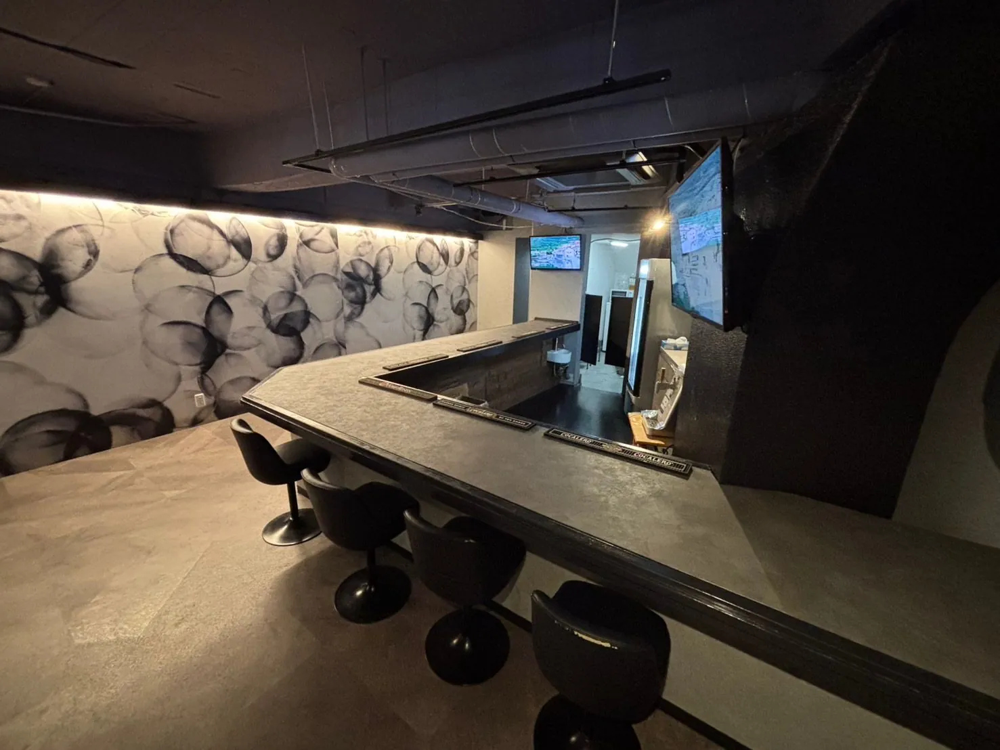
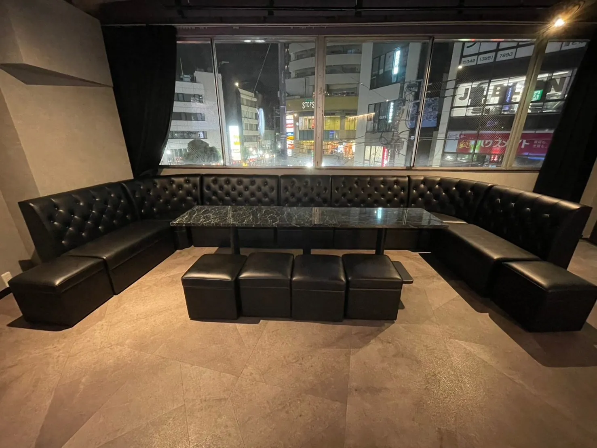
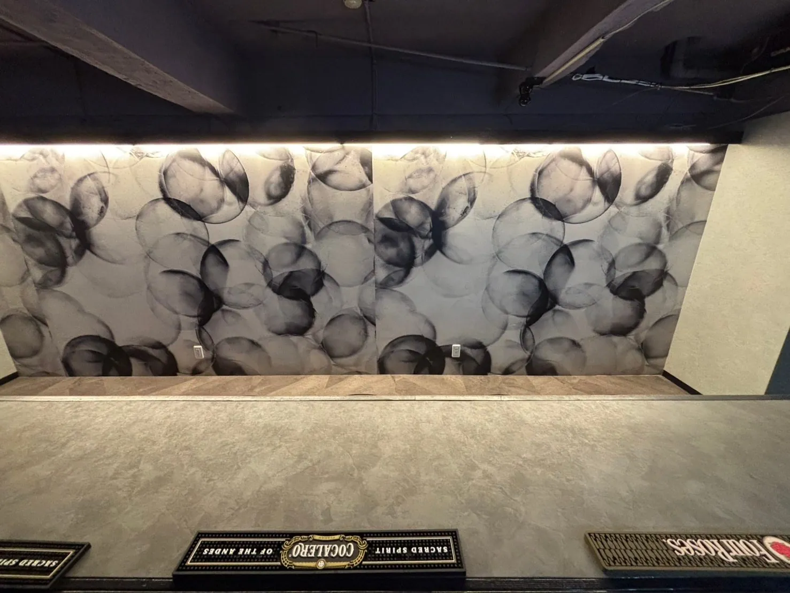
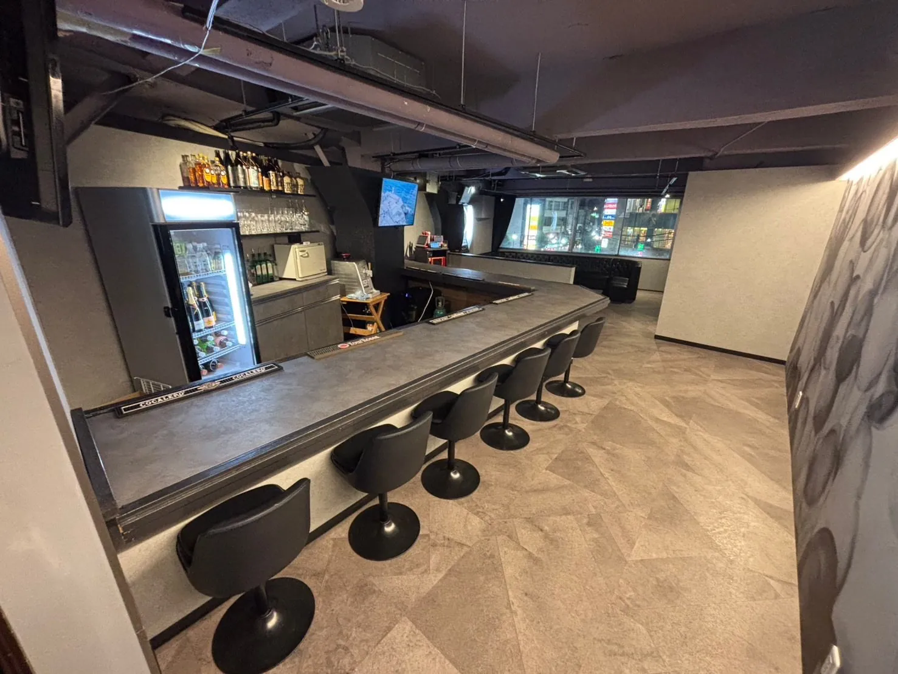
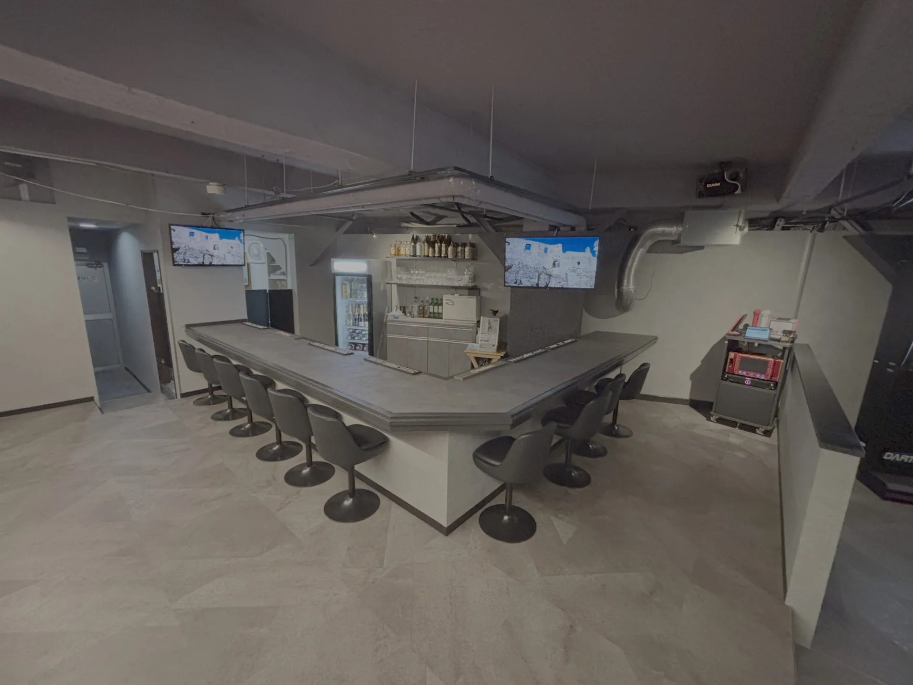

SCROLL TO EXPLORE ↓
WELCOME TO 042
ABOUT
Girl's Lounge 042について
国分寺にある Girl's Lounge 042。
グレーとブラックを基調とした落ち着いた店内で、
会話やお酒、カラオケ、ダーツをお楽しみいただけます。
KARAOKEDARTSCOUNTER & BOX
INSIDE THE LOUNGE
GALLERY
店内の雰囲気





PRICING
SYSTEM
料金システム
1 SET / 60 min
カウンター席¥3,000
ボックス席¥4,000
EXTENSION / 30 min
カウンター席¥2,000
ボックス席¥2,500
NOMINATION / 1 SET
カウンター席¥1,000
ボックス席¥2,000
CAST DRINK
キャストドリンク¥1,500
サービス料・TAX：20％
クレジットカード・QR決済：別途10％
※表示価格にはサービス料・TAXは含まれていません。追加料金の計算方法はご来店時にご確認ください。
SELECTED MENU
DRINK
ドリンクメニュー（一部抜粋）
飲み放題メニュー
ウーロンハイ / 緑茶ハイ / ジャスミンハイ / レモンサワー / ハイボール / ジントニック / カシスオレンジ / ソフトドリンク各種 ほか
BEER & SHOT
生ビール（1杯目無料）¥1,000
クエルボゴールド¥1,000
1800レポサド¥1,500
クライナー 3本¥2,500
BOTTLE
金宮¥3,000
黒霧島¥4,000
角瓶¥6,000
CHAMPAGNE
ポンパドール¥10,000〜
モエ・エ・シャンドン¥23,000〜
ヴーヴ・クリコ¥27,000〜
※メニューは一部抜粋です。その他の銘柄・料金は店舗にお問い合わせください。
JOIN OUR TEAM
RECRUIT
キャスト募集
FIND US
ACCESS
店舗情報・お問い合わせ
Girl's Lounge 042
〒185-0021
東京都国分寺市南町3丁目18-17
樋野第一ビル 3F
営業時間：月〜土 20:00〜LAST
定休日：日曜日
設備：カラオケ・ダーツ
お支払い：現金・クレジットカード・QR決済等
KOKUBUNJI · TOKYO042INSTAGRAM ↗